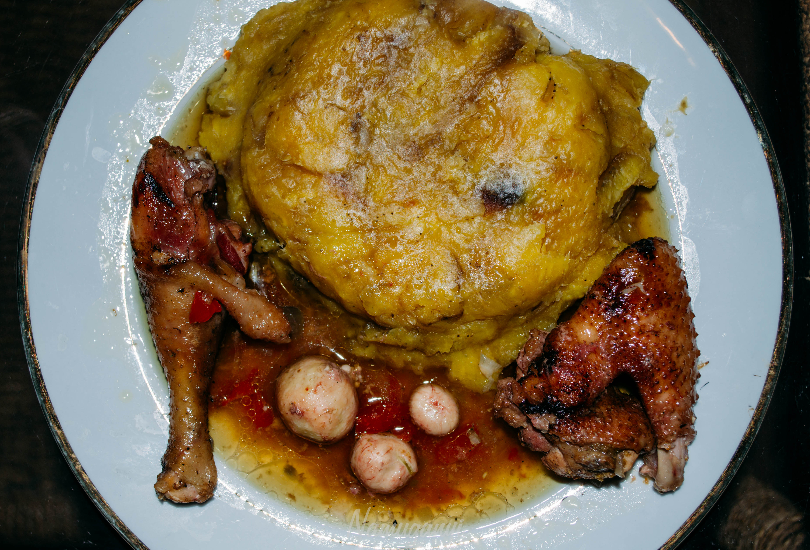

Home
Matoke (Plantain Recipe)

Matoke Served with Chicken Stew
Matoke is an East African dish (a staple in Uganda) made from semi-ripe plantains (or unripe plantains/green bananas depending on one's taste). While the dish has different versions across the continent, it is very prominent in the Eastern African highlands where all kinds of bananas thrive.
The dish is typically served with all kinds of stew though it can be relished as is
Ingredients
- 6 green semi-ripe bananas (matoke), peeled and chopped
- 2 tsp cooking oil
- 1 medium onion, diced
- 2 large tomatoes, diced or blended
- 2 cloves garlic, minced
- 1 tsp ginger, grated
- 1 tsp curry powder
- 1/2 tsp paprika
- 1 beef seasoning cube
- 1 cup beef/chicken stock
- salt to taste
- fresh coriander for garnish
Steps
- Peel and chop the bananas into bite-sized pieces, and place them in a bowl of water so they do not turn dark
- Heat the cooking oil in a pot over medium heat. Add the diced onion and cook until soft and translucent. Add the garlic and ginger, and cook for another minute until fragrant.
- Add the tomatoes, curry powder, paprika, and the crushed seasoning cube. Stir well and cook until the tomatoes break down into a thick paste.
- Drain the green bananas and add them to the pot. Stir to coat them in the tomato sauce. Pour in the water or stock and add salt to taste.
- Cover the pot with a lid, reduce the heat to medium-low, and simmer for 20 to 25 minutes until the bananas are tender and the sauce thickens.
- Stir gently, garnish with fresh chopped coriander, and serve hot.